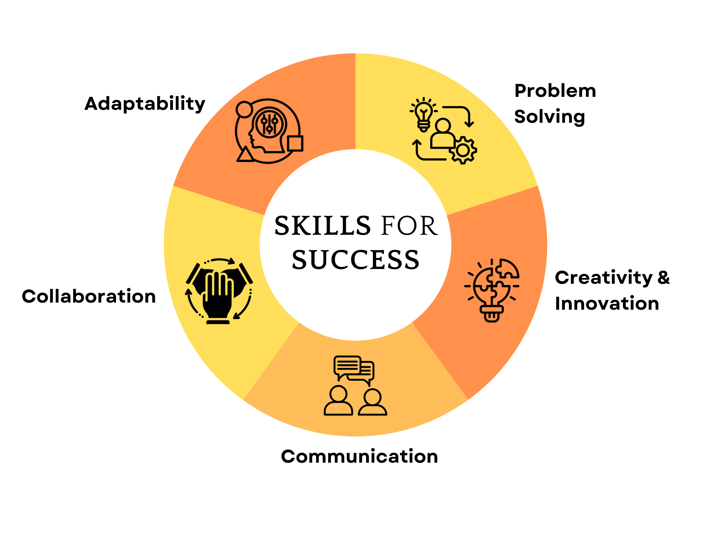

General
Transferable skills represent the versatile talents and practical abilities developed in one context that can be seamlessly applied across entirely different fields. Prior to developing this portfolio, I had never formally encountered the concept of transferable skills, nor did I realize how interconnected my academic abilities truly were. This assignment served as an eye-opener, challenging me to look beyond the immediate requirements of a single classroom and recognize the broader value of what I was learning.
Through this reflective process, I realized that the analytical skills I refined during this course are not confined strictly to English assignments. Learning how to dissect complex texts, identify underlying themes, and support my arguments with concrete evidence has fundamentally changed how I process information. I now see these competencies as universal tools rather than subject-specific rules.
Moving forward, I am excited to utilize these enhanced analytical abilities to elevate my performance in other classes. Whether I am interpreting data trends in science, evaluating historical perspectives in social studies, or structuring logical arguments in presentations, the skills I gained this semester will serve as a strong foundation for my future academic success.
